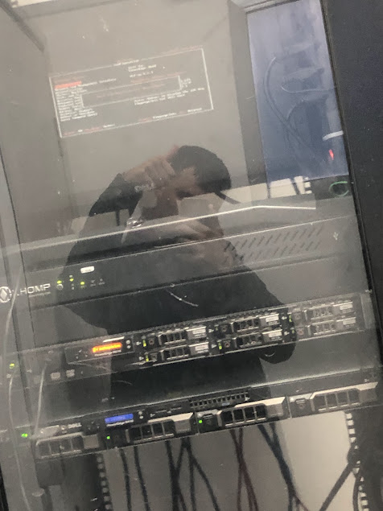
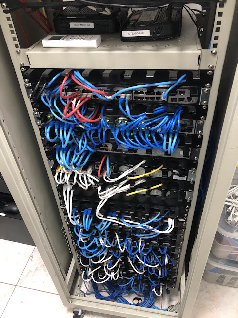

Sou um profissional de TI com experiência em Service Desk e Infraestrutura, atendimento remoto e presencial, gerenciamento de chamados usandos ferramentas ITSM, GLPI e ServiceNow, gestão de usuários e pastas compartilhadas em rede utilizando o Active Directory e suporte a ambientes corporativos.
GLPI, ServiceNow, Microsoft 365, Teams, Active Directory, Windows 10/11, TCP/IP, Impressoras, PHP, Javascript, Python, SQL

